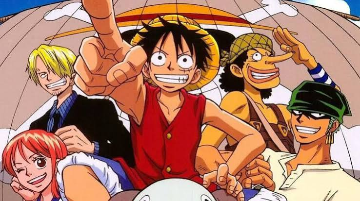

HomeI am a Junior at Warren Central and I am completley caught up on One Piece
I havce chosen this topic because it took me almost 2 years to finish the anime and manga, which are both still ongoing. Watching one piece has been one of the greatest journies i've been on, and I can only describe it as peak.
One Piece is the best of the Big 3